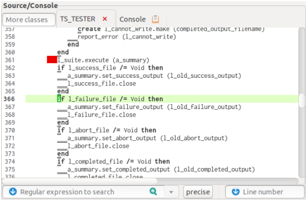

Gedb – The Gec debugger3.6 Source part
The Source part consists of the main text field
that is the overlay of several source texts
(and the Console part, see Sec. 3.7)
and of the bottom fields to enter a search string or a line number.
The text field is not editable to preserve the consistence
of shown class texts with the ones the debuggee was compiled with
(of course, the source texts must also not be edited by an external editor
as long as the debugging session runs).

| Figure 4: The Source part
showing a breakpoint (red) and the actual stop point (green).
The underlined characters represent possible positions
for breakpoints. |
3.6.1 Highlighted text
Within the displayed source code a few small parts may be highlighted
(besides syntax highlighting) as follows:
- green background
- actual stop position if the class is that
of the actual stack level or belongs otherwise to the call stack
(see remark in Sec. 3.6.5);
- light green background
- line of actual stop position
(to make the stop position better detectable);
- red background
-
the position of the At condition of a breakpoint;
- underlined
-
possible positions for the At condition of breakpoints
(classes not compiled for debugging or routines without generated C code
don’t have those positions);
- orange background
- string found by a search
(see Sec. 3.6.4);
- medium blue background
-
name of the class under the mouse pointer that can be displayed
(see Sec. 3.6.5);
- light blue background
-
name of the feature under the mouse pointer that can be listed
(see Sec. 3.6.5);
- light pink background
-
name of the feature under the mouse pointer that can be listed and computed,
the enclosing routine must belong to the call stack
(see Sec. 3.6.5);
- light gray background
- line of the insertion cursor
(to make the cursor position better detectable).
The various background colors take the priorities:
orange, red, green, light pink, light blue, medium blue,
light green, light gray.
3.6.2 Class selection
The class is selected (and added to the tag fields bar if not yet there) by
- choosing a tag from the tag fields bar
(the tag can also be selected by right clicking somewhere
in the tag fields bar:
a pop-up menu opens from which the class can be chosen);
- choosing a class from the text entry at the left of the tag field bar
(see Sec. 3.2 for details on class name selection);
- choosing a stack level in the Call stack part (see Sec. 3.8),
in this case the source code around the actual stop point is displayed;
- the class of the additional Feature window
when clicking To source there
(see Sec. 3.6.5).
If a class is selected that has been excluded from debugging
then this fact will be indicated by striking through the class name
in the tag fields bar.
3.6.3 Cursor movement
Within the text field a special location is indicated
by the insertion cursor (not to be confused with the mouse pointer):
a small bar that sits between two characters of a line
(or at the very begin or end of a line).
It can be moved by
-
left click
- the cursor jumps to the position of the mouse pointer;
- arrow keys
- move one position in the indicated direction;
- Home, End keys
- move to the line start or end;
- Page Up, Page Down keys
- move up or down as many lines
as are shown in the source text.
- Control-l
- select a line directly (see below);
- Control-f
- search for a string (see Sec. 3.6.4).
A specific line can be selected by entering a number
into the entry on bottom right of the Source part.
Entering of the number may be initiated
by clicking in the entry to make it sensitive for keyboard input,
or by Control-l in the text field
(in this case the text field remains sensitive);
entering is finished by pressing the Enter key.
The entered number n may be
-
positive
- the n-th line from start is selected
(the one with line number n);
- negative
- the n-th line from the text end is selected;
- zero
- the line of the previous show line action is selected.
3.6.4 Searching
The text field is not writeable but searchable: two methods are provided.
First, enter the string (generally: regular expression) to be searched
into the search field at the part’s bottom,
close input by pressing Enter.
Repeatedly search of the same pattern continues the search
starting after the previously found pattern.
Second, fast processing incremental search can be performed
from within the text field.
Entering Control-f starts a search cycle,
then forthcoming entered printable keys are accumulated to a string
that is searched immediately. The sequence of key presses may include
BackSpace to remove the last key from the search string
(and search goes back to the previously found pattern), or it may include
Arrow Up, Arrow Down to search the same string again
in the given direction.
All other keys and moving the mouse pointer outside the text field
terminate the search cycle.
After termination the same string may be searched by initiating
another search cycle with two Control-f presses.
In any case,
the search is case insensitive and regular expressions are not supported.
3.6.5 Other actions
The actions of the Source part described so far
work completely inside the GUI without interacting the debuggee
and these actions are available even when the debuggee is running.
By contrast, if not the contrary is not stated explicitly,
the following actions are available only if the debuggee is not running.
-
Control-.
- (dot)
If the displayed class is not the base class of a routine in the call stack
then the base class of the selected stack routine is selected first.
Then in any case the source code around the stop point is displayed.
- Control-b
- Set a breakpoint next to the insertion cursor;
the breakpoint has only the At condition defined,
the other parts may be specified later
by manipulation in the Breakpoints part.
- Control-d
-
Delete the breakpoint(s) next to the insertion cursor.
- Control-g
-
If the routine containing the insertion cursor belongs to the call stack
then continue debuggee execution to the point next to the insertion cursor
(or to the routine’s caller if the point is not hit),
i.e. define a temporary breakpoint and issue a Cont command
with repeat=1, other breakpoint settings remain active.
- Control-G
- Like Control-g but ignore all other breakpoints
(i.e. run in silent mode).
- single right click or Control-t
-
If the feature name under the mouse pointer
is highlighted light blue or light pink then the feature definition
is shown in an additional window. This window has two buttons:
- Close
- : close the window
- To source
- :
close the window and display its contents in the Source part.
Similarly, if the class name under the mouse pointer
is highlighted medium blue then the class text is shown
in the Source part (no detour through the additional window).
Hint: This action is always available.
- double right click or Control-e
-
If the feature name under the mouse pointer is highlighted light pink
then the feature (in any case a query) is inserted
in the Evaluation part’s Expr field at the insertion cursor there
where it can be manipulated further.
- triple right click or Control-E
-
If the feature name under the mouse pointer is highlighted light pink
then the Evaluation part’s Expr field is cleared,
the feature is inserted in the field, and the evaluation is done immediately.
The various control characters may be read as “show actual”,
“breakpoint”, “delete breakpoint”, “go to”, “go to in any case!”,
“text of”, “evaluate”, and “evaluate now!”, respectively.
Some final remarks on the phrases “routine in the call stack”
and “next to the insertion cursor”.
A routine belongs to the call stack if it is the routine
of the selected level in the Call stack part (see Sec. 3.8)
or the routine of a higher level
(for implementation reasons, routines on lower levels are not accessible).
If the routine occurs several times then action Control-.
and background colouring for the actual point select the one
closest to the selected level.
The location for the breakpoint is the first underlined
text position left or above the insertion cursor,
it is at the same time a position where a Next command stops.